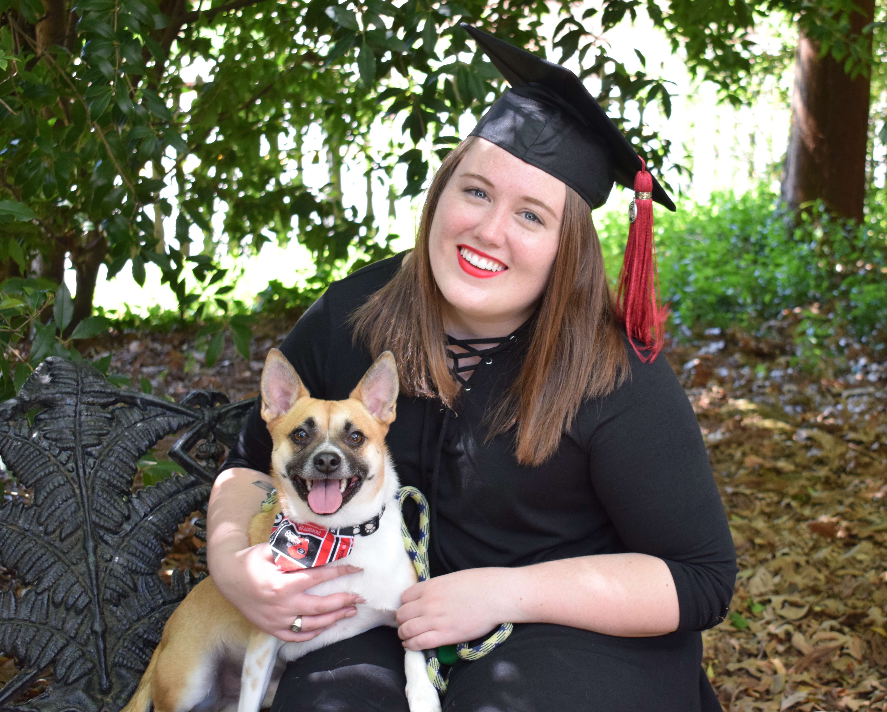

As I look back on my four years at UGA , I find myself thinking about all the goods times I've had here. From my first days in Georgia to this semester, the years I've spent here did not disappoint. While I'm starting a new chapter in my life in May when I graduate, I can't help but remember this one. On this page, I'll discuss my four years here and some quick points that led me to who I am now.
I was born and raised in Virginia so coming to college was a rather huge adjustment for me. I decided to pack up everything I knew and travel 8 hours down to Georgia to pursue a degree in Public Relations. While I switched my major to Fashion Merchandising early on, I knew UGA was the right fit for me the minute I walked onto campus. I quickly adapted to my new environment and enjoyed my first two years here! Below is a list of everything that made me fall in love with UGA. These were some of the first things I remember about my first years at UGA!
A really big change I'll always remember from college is adopting my amazing pup, Harley! I got him from Athens Canine Rescue . I am a huge animal lover so of course I mark this as one of the most important parts of my college career. I adopted Harley (Bubs) towards the end of my junior year. He came into my life on a whim but I've loved every second of it! He's sassy, quirky, cute and so many more things. He's a pistol, but he's my little pistol. Below is a picture of us during my graduation photoshoot! He stole the show for sure. 
I'm not entirely sure what's next for me. I'm in the process of changing my career and it may take me a few months before I decide in concrete what I want to do. One thing is for sure- I want to travel to various places. I was never a homebody and love to visit and explore new places as much as possible. I have specific places and times when I want to have them done. It's easier to show in a chart so I listed one below! As graduation approaches, I can't help but be nostaligic for the old times and thoroughly excited for the new. No matter where or what I do, I will always remember one thing: GO DAWGS!!
| Place to Visit | By What Age |
|---|---|
| England/Spain/Italy/France | 22 |
| Australia | 24 |
| Iceland | 27 |
| Japan | 30 |